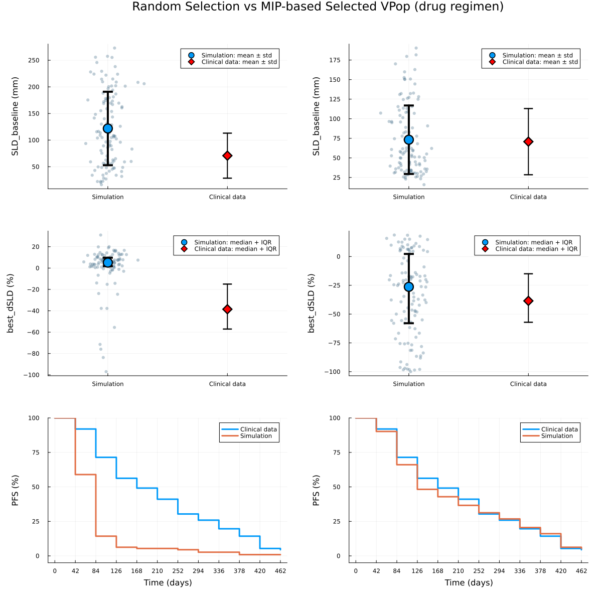

A non-small cell lung cancer (NSCLC) model
A non-small cell lung cancer (NSCLC) model is used to demonstrate the VPopMIP approach. The model is described in An integrated quantitative systems pharmacology virtual population approach for calibration with oncology efficacy endpoints. A set of 1000 patients was generated using scripts provided in the supplementary materials of that work. In the original study, individual patient data were used for VPop selection, including three endpoints for 112 patients across two treatment regimens (“drug” and “placebo”). To demonstrate applicability of the proposed method to more realistic settings, we converted individual-level data into summary statistics:
- SLD_baseline: mean and std of baseline tumor size (sum of longest diameters)
- best_dSLD: 25th, 50th, 75th percentiles of the best percentage change in SLD
- PFS: progression free survival data
First, we load the simulated virtual population as a DataFrame and use the load_vpop function to select the columns in the DataFrame that correspond to clinically reported endpoints and construct VirtualPopulation.
using VPopMIP, CSV, DataFrames, Plots, StatsBase
ppopdf = CSV.read("./models/Braniff2024/ppopdf1000.csv", DataFrame)
ppop = load_vpop(ppopdf; endpoints=["best_dSLD", "time_to_best", "time_to_pfs", "SLD_baseline"])Virtual Population.
Number of Virtual Patients: 1000.
Number of pre-selected Virtual Patients: 0.
Next, we load the clinical data for the drug and placebo regimens as summary statistics. For supported clinical data formats and loading options, see the DigiPopData documentation.
metrics_df = CSV.read("./models/Braniff2024/metrics_table.csv", DataFrame; stringtype=String)
data = parse_metric_bindings(metrics_df);6-element Vector{MetricBinding}:
MetricBinding("SLD_baseline_placebo", "placebo", MeanSDMetric(112, 70.7795133963594, 42.269000400434656), "SLD_baseline", true, 1.0)
MetricBinding("SLD_baseline_drug", "drug", MeanSDMetric(112, 70.7795133963594, 42.269000400434656), "SLD_baseline", true, 1.0)
MetricBinding("best_dSLD_placebo", "placebo", QuantileMetric(112, [0.25, 0.5, 0.75], [3.3422, 9.7803, 16.8001], false, [8.0 4.0 4.0; 4.0 8.0 4.0; 4.0 4.0 8.0], Bool[1, 1, 1, 1], [0.25, 0.25, 0.25, 0.25]), "best_dSLD", true, 1.0)
MetricBinding("best_dSLD_drug", "drug", QuantileMetric(112, [0.25, 0.5, 0.75], [-57.0978, -38.527, -14.9943], false, [8.0 4.0 4.0; 4.0 8.0 4.0; 4.0 4.0 8.0], Bool[1, 1, 1, 1], [0.25, 0.25, 0.25, 0.25]), "best_dSLD", true, 1.0)
MetricBinding("PFS_placebo", "placebo", SurvivalMetric(112, [1.0, 0.9196, 0.7143, 0.5625, 0.4911, 0.4107, 0.3036, 0.2589, 0.1964, 0.1429, 0.0536, 0.0446], [0.0, 42.0, 84.0, 126.0, 168.0, 210.0, 252.0, 294.0, 336.0, 378.0, 420.0, 462.0], [34.85933560895074 22.421524663677104 … 22.421524663677104 22.421524663677104; 22.421524663677108 27.292445267671262 … 22.421524663677104 22.421524663677104; … ; 22.421524663677108 22.421524663677108 … 33.619732950351235 22.421524663677104; 22.421524663677108 22.421524663677108 … 22.421524663677104 133.5326357747882], Bool[0, 1, 1, 1, 1, 1, 1, 1, 1, 1, 1, 1, 1], [0.0, 0.08040000000000003, 0.20529999999999993, 0.15180000000000005, 0.07140000000000002, 0.08039999999999997, 0.10710000000000003, 0.04469999999999996, 0.06250000000000003, 0.05349999999999999, 0.08929999999999999, 0.009000000000000001, 0.0446]), "time_to_pfs", true, 1.0)
MetricBinding("PFS_drug", "drug", SurvivalMetric(112, [1.0, 0.9196, 0.7143, 0.5625, 0.4911, 0.4107, 0.3036, 0.2589, 0.1964, 0.1429, 0.0536, 0.0446], [0.0, 42.0, 84.0, 126.0, 168.0, 210.0, 252.0, 294.0, 336.0, 378.0, 420.0, 462.0], [34.85933560895074 22.421524663677104 … 22.421524663677104 22.421524663677104; 22.421524663677108 27.292445267671262 … 22.421524663677104 22.421524663677104; … ; 22.421524663677108 22.421524663677108 … 33.619732950351235 22.421524663677104; 22.421524663677108 22.421524663677108 … 22.421524663677104 133.5326357747882], Bool[0, 1, 1, 1, 1, 1, 1, 1, 1, 1, 1, 1, 1], [0.0, 0.08040000000000003, 0.20529999999999993, 0.15180000000000005, 0.07140000000000002, 0.08039999999999997, 0.10710000000000003, 0.04469999999999996, 0.06250000000000003, 0.05349999999999999, 0.08929999999999999, 0.009000000000000001, 0.0446]), "time_to_pfs", true, 1.0)Finally, we use the subset_vpop function to solve the binary optimization problem, resulting in an optimal subset (the VPop) that matches the clinical data. By default, SCIP.Optimizer is used. You can provide a custom optimizer and time/gap settings in subset_vpop(...; kwargs...).
vpnum = 112
vpop = subset_vpop(ppop, data, vpnum; scip_limits_gap = 0.05)Virtual Population.
Number of Virtual Patients: 112.
Number of pre-selected Virtual Patients: 0.
We can also visualize the results and compare patients selected at random with those selected by the MIP algorithm.
vpopdf = filter(:scenario => x -> x == "drug", DataFrame(vpop))
ppopdf = filter(:scenario => x -> x == "drug", DataFrame(ppop))
rand_vpopdf = ppopdf[sample(1:nrow(ppopdf), vpnum; replace=false), :]
rand_vpop = load_vpop(rand_vpopdf)
sld_drug_df = filter(row -> row.scenario == "drug" && row.endpoint == "SLD_baseline", metrics_df)
best_dsld_drug_df = filter(row -> row.scenario == "drug" && row.endpoint == "best_dSLD", metrics_df)
best_dsld_drug_values = parse.(Float64, strip.(split(best_dsld_drug_df."metric.values"[1], ';')))
pfs_drug_bind = only(filter(d -> d.scenario == "drug" && d.endpoint == "time_to_pfs", data))
function SLD_base_sim_exp(
df;
exp_mean = sld_drug_df."metric.mean"[1],
exp_std = sld_drug_df."metric.sd"[1]
)
sim_mean = mean(df.SLD_baseline)
sim_std = std(df.SLD_baseline)
default_blue = palette(:default)[1]
p = plot(
xticks = ([1, 2], ["Simulation", "Clinical data"]),
ylabel = "SLD_baseline (mm)",
legend = :topright,
xlims = (0.5, 2.5),
dpi = 400
)
x_sim = fill(1, nrow(df)) .+ 0.08 .* randn(nrow(df))
scatter!(
p,
x_sim,
df.SLD_baseline,
color = RGB(0.3, 0.45, 0.55), # blue-grey
alpha = 0.35,
markersize = 3.5,
markerstrokewidth = 0,
label = false
)
scatter!(
p,
[1], [sim_mean],
yerror = ([sim_std], [sim_std]),
color = default_blue,
markersize = 10,
linewidth = 4,
label = "Simulation: mean ± std"
)
scatter!(
p,
[2], [exp_mean],
yerror = ([exp_std], [exp_std]),
color = :red,
markersize = 9,
markershape = :diamond,
linewidth = 2,
label = "Clinical data: mean ± std"
)
return p
end
function dSLD_sim_exp(
df;
exp_q25 = best_dsld_drug_values[1],
exp_q50 = best_dsld_drug_values[2],
exp_q75 = best_dsld_drug_values[3]
)
sim_q25 = quantile(df.best_dSLD, 0.25)
sim_q50 = quantile(df.best_dSLD, 0.50)
sim_q75 = quantile(df.best_dSLD, 0.75)
default_blue = palette(:default)[1]
p = plot(
xticks = ([1, 2], ["Simulation", "Clinical data"]),
ylabel = "best_dSLD (%)",
legend = :topright,
xlims = (0.5, 2.5),
dpi = 400
)
# --- Simulation scatter ---
x_sim = fill(1, nrow(df)) .+ 0.08 .* randn(nrow(df))
scatter!(
p,
x_sim,
df.best_dSLD,
color = RGB(0.3, 0.45, 0.55), # blue-grey
alpha = 0.35,
markersize = 3.5,
markerstrokewidth = 0,
label = false
)
# --- Simulation median + IQR ---
scatter!(
p,
[1], [sim_q50],
yerror = ([sim_q50 - sim_q25], [sim_q75 - sim_q50]),
color = default_blue,
markersize = 10,
linewidth = 4,
label = "Simulation: median + IQR"
)
# --- Clinical data ---
scatter!(
p,
[2], [exp_q50],
yerror = ([exp_q50 - exp_q25], [exp_q75 - exp_q50]),
color = :red,
markersize = 9,
markershape = :diamond,
linewidth = 2,
label = "Clinical data: median + IQR"
)
return p
end
p11 = SLD_base_sim_exp(rand_vpopdf)
p12 = SLD_base_sim_exp(vpopdf)
p21 = dSLD_sim_exp(rand_vpopdf)
p22 = dSLD_sim_exp(vpopdf)
p31 = plot(rand_vpop, pfs_drug_bind; dpi=400, xguide="Time (days)", yguide="PFS (%)")
p32 = plot(vpop, pfs_drug_bind; dpi=400, xguide="Time (days)", yguide="PFS (%)")
p = plot(
p11, p12,
p21, p22,
p31, p32,
layout = (3, 2),
size = (1200, 1200),
margins=5Plots.mm,
plot_title = "Random Selection vs MIP-based Selected VPop (drug regimen)"
)
p